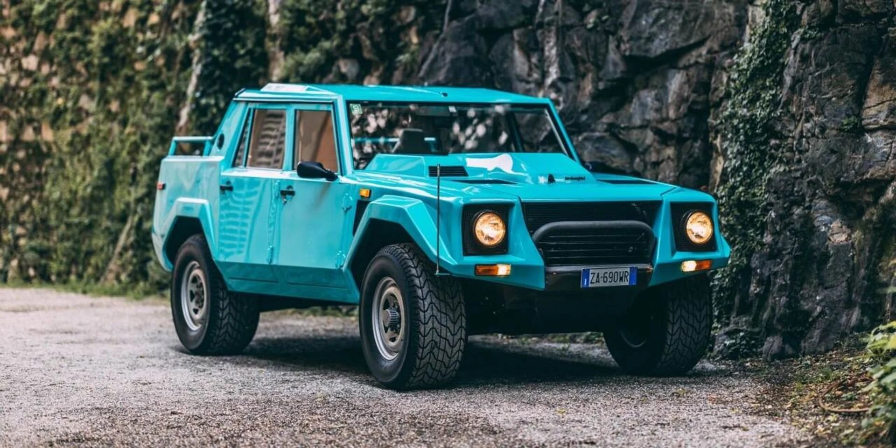

The Lamborghini LM002, often referred to as the "Rambo Lambo," is a unique and iconic luxury SUV produced by the Italian automaker Lamborghini. Here's some key information about the Lamborghini LM002


Années de production:La Lamborghini LM002 a été produite entre 1986 et 1993.
Elle a été initialement développée comme un véhicule tout-terrain hautes performances destiné à un usage militaire et civil.
Design:Le LM002 présente un design distinctif et robuste, caractérisé par sa forme carrée, ses lignes nettes et ses grands panneaux de carrosserie angulaires.
Il a une apparence d'inspiration militaire, avec des caractéristiques comme le pare-brise plat et une roue de secours montée sur le capot.
Moteu:Le LM002 est propulsé par un énorme moteur V12, le même moteur utilisé dans la Lamborghini Countach et plus tard dans la Lamborghini Diablo.
Initialement, elle était équipée d'un moteur V12 de 5,2 litres, mais les versions ultérieures,
connues sous le nom de LM002 LMA, étaient équipées d'un moteur V12 de 7,2 litres. Le moteur produisait une puissance et un couple impressionnants,
faisant du LM002 un SUV hautes performances.
Performances:Malgré sa grande taille et son poids, le LM002 était étonnamment rapide.
Le moteur V12 de 7,2 litres développait environ 450 chevaux, lui permettant d'atteindre des vitesses allant jusqu'à 130 mph (209 km/h).
Ses capacités tout-terrain étaient également impressionnantes, grâce à des fonctionnalités telles que la transmission intégrale et les différentiels verrouillables.
Intérieur:À l'intérieur, le LM002 présentait une cabine luxueuse et bien aménagée avec un revêtement en cuir, des boiseries et des équipements modernes pour l'époque.
Il offrait une expérience de conduite confortable et haut de gamme, le distinguant des véhicules de style militaire traditionnels
Production limitée:Lamborghini a produit un nombre relativement restreint de SUV LM002 au cours de sa production.
En conséquence, le LM002 est considéré comme un véhicule rare et de collection, avec un mélange unique de luxe et de capacités tout-terrain.
Héritage:La Lamborghini LM002 était bien en avance sur son temps et est souvent considérée comme l'un des précurseurs du marché des SUV de luxe modernes.
Il s'agissait d'un véhicule non conventionnel pour Lamborghini, connu pour ses voitures de sport hautes performances, mais il mettait en valeur
les prouesses techniques et la polyvalence de la marque.
Successeur: Lamborghini n'a produit de successeur direct au LM002 que plusieurs années plus tard, lorsqu'ils ont présenté le Lamborghini Urus en 2018.
L'Urus est un SUV hautes performances conçu pour les amateurs de SUV de luxe modernes.
La Lamborghini LM002 est un véhicule rare et fascinant dans l'histoire de Lamborghini